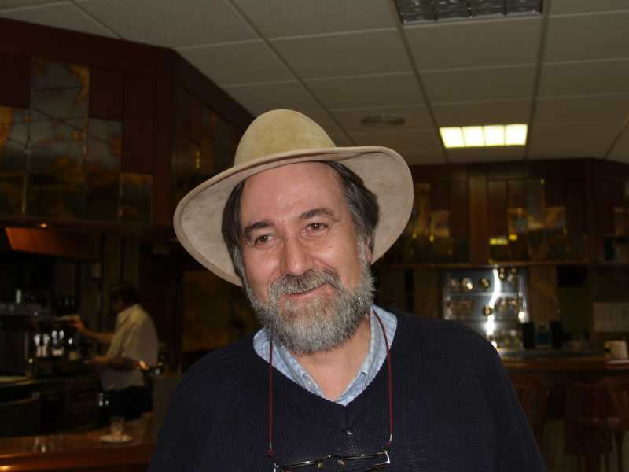

Encuentro en SantoñaManolo Sánchez, "El Cacereño", no, no es el Cabrero, no. Es, junto con Jaime y yo, los únicos representantes fundadores del 'Encuentro'. Siempre riendo, hablando, contándote miles de historias de cuando estuvimos allí. Junto con Manolo R. Miera, que memorión. Ya quisiera yo, pero este jodío alemán.... |
|
 |